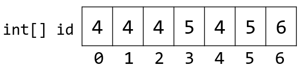
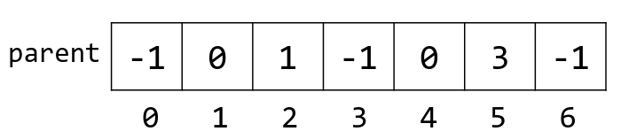
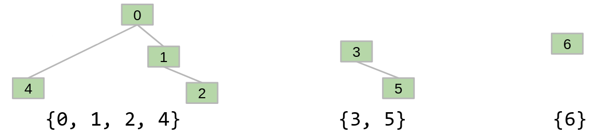
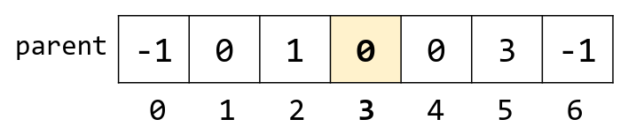
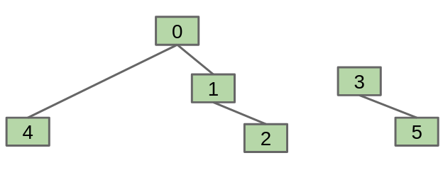
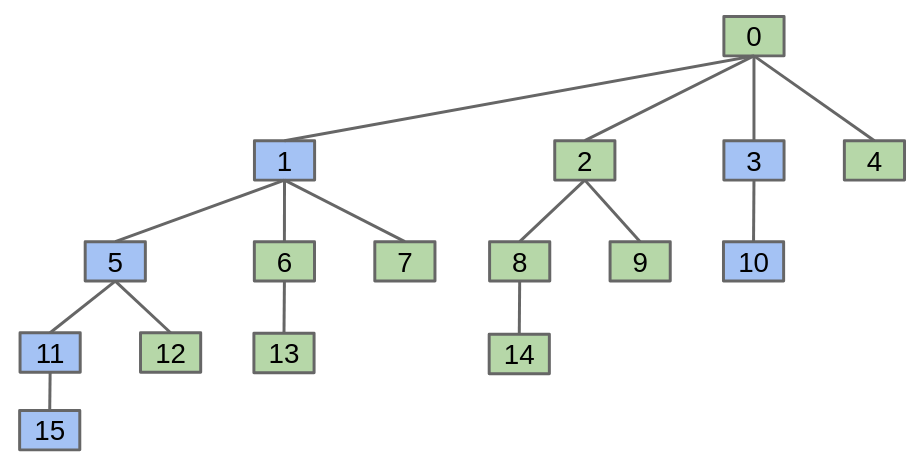
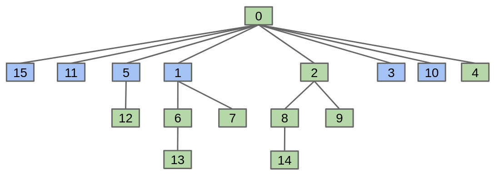

Disjoint Sets
Table of Contents
1. Disjoint Sets
The disjoint sets data structure has two operations:
public interface DisjointSets {
/** Connects two items p and q. */
void connect(int p, int q);
/** Checks to see if two items are connected. */
boolean isConnected(int p, int q);
}
Connections can be transitive, which means that x and y do not have to be directly connected for them to be connected. We want to design an implementation that is efficient when the number of elements is large and the number of method calls is large.
1.1. Connected Components
The naive approach would be to track every connection, but it becomes very difficult to implement isConnected.
Rather than manually writing out every single connecting line, we only record the sets that each item belongs to. Every time we call connect on two elements, we move combine their respective sets so that they end up in the same set. Thus, when we call isConnected, we only need to check if they are in the same set.
1.2. List of Sets
Our first idea is to use a list of sets of integers, List<Set<Integer>>. However, operations on these take \(O(N)\) time because they need to first find the set that contains the element we want:
| Implementation | Constructor | connect |
isConnected |
|---|---|---|---|
ListOfSetsDS |
\(\Theta(N)\) | \(O(N)\) | \(O(N)\) |
1.3. Quick Find
Our next idea is to use an array of integers where the ith entry gives the “set number” (or “set id”) of item i. In other words, instead of storing the sets themselves, we store an id. If two numbers have the same id, we know they are in the same set.
For example, instead of storing {0, 1, 2, 4}, {3, 5}, {6}, we can store:

This allows us to check if two sets are connected in constant time, because we just need to access the array twice. However, connecting two sets still requires us to iterate over the array:
| Implementation | Constructor | connect |
isConnected |
|---|---|---|---|
QuickFindDS |
\(\Theta(N)\) | \(\Theta(N)\) | \(\Theta(1)\) |
1.4. Quick Union
Our goal is to make connect fast by finding some method so that we don’t have to look through the entire array. The idea is to assign each item a parent (instead of an id):

This allows us to represent the disjoint set as a number of trees:

Now, say we want to do connect(5, 2). To do so, we must find the root of the 5 tree (which is 3), then change the parent of 3:

However, while this makes connecting potentially faster, it also makes isConnected slower in some circumstances as we have to traverse an entire branch of a tree:
| Implementation | Constructor | connect |
isConnected |
|---|---|---|---|
QuickUnionDS |
\(\Theta(N)\) | \(O(N)\) | \(O(N)\) |
1.5. Weighted Quick Union
We observe that things would be faster if we just kept the trees in QuickUnionDS balanced. In other words, we want to set the parents so that we minimize the height of our tree. Realize that we can always link the root of the smaller tree to the larger tree:

Considering the worst case where the tree height grows as fast as possible, we see that the height growths logarithmically with respect to the number of elements. Thus, our performance becomes:
| Implementation | Constructor | connect |
isConnected |
|---|---|---|---|
WeightedQuickUnionDS |
\(\Theta(N)\) | \(O(\log N)\) | \(O(\log N)\) |
1.6. Weighted Quick Union with Path Compression
WeightedQuickUnion is fast enough for all practical purposes, but could we do better? Consider calling isConnected(15, 10) on the following tree:

The cells highlighted in blue are the elements that we have seen. The idea is that we can compress the tree height by replacing all the blue nodes’ parent to the root:

By compressing the tree like this with each isConnected call, we can keep the tree nice and short. As the number of elements grows, our tree gets taller, but as the number of operations grows, our tree tends to get shorter. In fact, it can be shown that its runtime grows with respect to \(\alpha(N)\), where \(\alpha\) is the inverse Ackermann function.